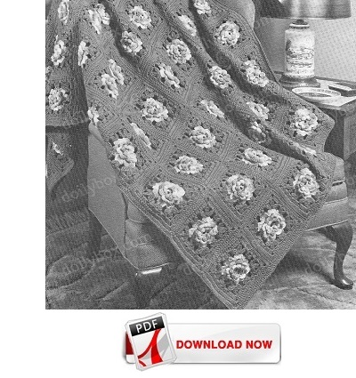

Click image for a larger view

Rose In Bloom Afghan Pattern
MATERIALS:
COATS & CLARK'S RED HEART KNITTING WORSTED, 4 Ply ("Tangle-Proof" Pull-Out Skeins): 32 ounces of No. 588 Amethyst; 30 ounces of No. 990 Roses and 14 ounces of No. 649 Olive Green.
Crochet Hook, Size G.
Afghan measures 51 x 73 inches.
Motif measures 7 1/4 inches square.
Be sure to check your gauge before starting afghan. Use any size hook which will obtain the motif measurements above.
MOTIF (Make 70) Starting at center with Roses, ch 6. Join with sl st to form ring.
1st rnd: In ring make (sc, ch 5) 8 times. Do not join.
2nd rnd: In each loop around make sc, hdc, dc, hdc and sc-8 petals.
3rd and 5th rnds: Holding petal forward, sc in first sc of next-to-last rnd, ch 4, * sc in next sc of next-to-last rnd between the petals, ch 4. Repeat from * around.
4th rnd: In each ch-4 loop make sc, hdc, 3 dc, hdc and sc.
6th rnd: In each loop make sc, hdc, 5 dc, h dc and sc. Join to first sc. Break off and fasten.
7th rnd: Attach Green to 3rd dc of any petal of previous rnd, ch 3, in same dc where yarn was attached make a 2-dc cluster as follows: holding back on hook last loop of each dc, make 2 dc in same dc, yarn over and draw through all loops on hook; ch 2, make 3-dc cluster in same dc, * ch 3, in 3rd dc of next petal make 3-tr cluster, ch 4, 3-dtr cluster, ch 4 and 3-tr cluster for corner group; ch 3, in 3rd dc of next petal make 3-dc cluster, ch 2, 3-dc cluster. Repeat from * around, ending with ch 3. Join to tip of first cluster. Break off and fasten.
8th rnd: Attach Amethyst to tip of center dtr cluster of any corner group, ch 3, make 2 dc in same place, (3 dc in next sp) 5 times; * in tip of next dtr cluster make 3 dc, ch 3 and 3 dc; (3 dc in next space) 5 times. Repeat from * around, ending with 3 dc in same st where first 2 dc were made, ch 3. Join to top of first ch-3.
9th rnd: Ch 3, * dc in each dc across to within next ch-3 sp, in sp make 3 dc, ch 3 and 3 dc. Repeat from * around. Join. Break off and fasten. Block to measurements. Using Amethyst and picking up the back loop only of each dc and each ch (front loops remain free on right side), sew 7 x 10 motifs neatly together.
Edging: Attach Amethyst to dc preceding any of the 4 corner sps, ch 3, making 3 dc, ch 3 and 3 dc in each of the 4 corner sps, dc evenly around entire outer edge. Join to top of ch-3. Break off and fasten.
Home